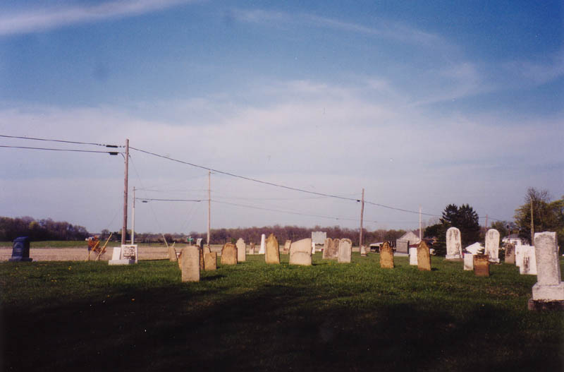
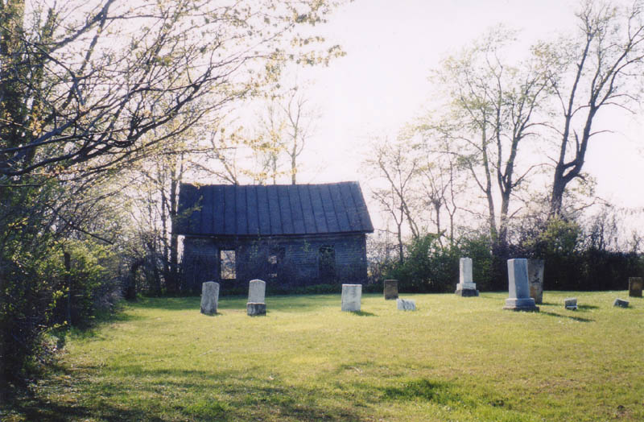
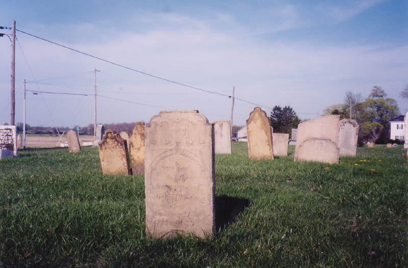
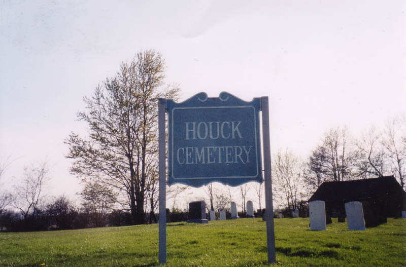

This small, old cemetery is on Route 3 in Knox County, between Centerburg and Sunbury, southwest of Mt. Vernon.

An abandoned shed (or maybe schoolhouse) with no windows stands overgrown with thorny weeds at the back. Nearby is somebody's house, which shares a driveway with the graveyard.

Katydid and I spotted this one on our way back from Mt. Vernon after a late-April visit to the House of Nightmares. The stones belong to settlers from the area, and date back as far as the very early 1800s.

Nothing too earth-shattering here, but it's certainly a cemetery worth visiting for its historical value. It's on the righthand side of Route 3 as you head toward Mt. Vernon, just past Mt. Liberty.
Special thanks to Katydid for the excellent photos.
Back
forgottenohio@yahoo.com